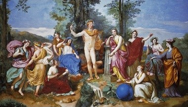
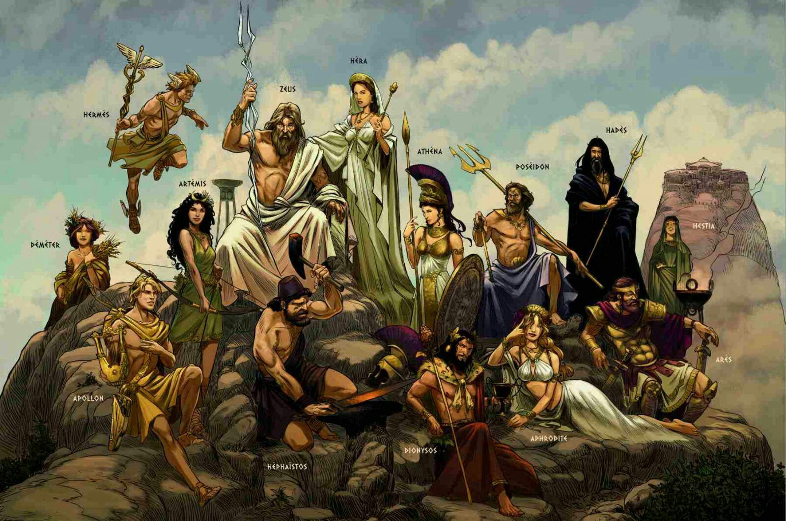
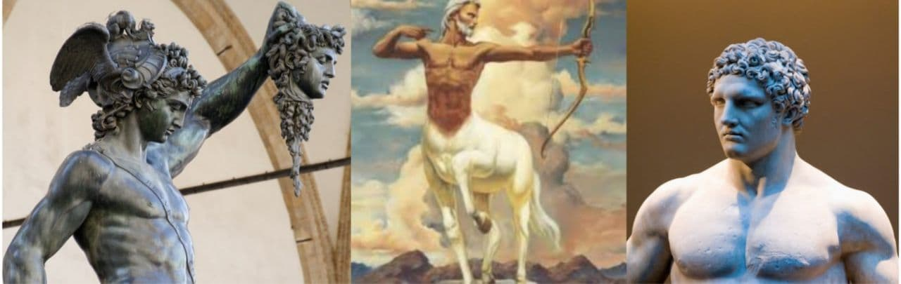
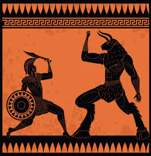

Greek Mythology
Introduction
Mythology comprises of folklore; stories and songs, of a group of people mostly made up of interesting but fictional occurences.
The Greeks believe that in the old days the world was made up of many different creatures, some more powerful than others.
It is believed that Uranus(the heavens) and Gaea(the earth) came together, and their first descendants were the titans. Other children of Gaea(Cyclopes and Hecatonchires) were incarcerated by Uranus. Causing Gaea to bid the Titans against Uranus.
The Titans
The titans were the most powerful beings in the world, the first descendants.
There were 12 original titans.
The brothers; Oceanus, Coeus, Crius, Hyperion, Iapetus and Cronus.
The sisters; Thea, Rhea, Themis, Mnemosyne, Phoebe amd Tethys.
The Titans led by Cronus, fought against their father, Uranus (due to their mother, Gaea's instigation) and won against him.
But just before Uranus was defeated, he made a prophecy that Cronus will also be defeated by his own sons in the same manner. When Uranus was defeated his blood fell on the earth, creating some of the other mythical creatures. The Titans defeated Uranus with Cronus as their leader.
Hence after the war Cronus took the throne.
As time went on Cronus grew to be a tyrant like his father.
With the fear that his Fathers prophecy might come true, he started eating his his sons, the gods. Immediately after their conception. In order to guarantee his reign.

The Gods
Rhea, the wife of Cronus tricked her husband into swallowing a rock and thus saved Zeus, the youngest child's life. He was hidden in a cave and raised by Amalthea, a goat.
When Zeus grew up he became Cronus' cup bearer and gave him a mixture which made him vommit out the rock as well as all his other children when he drank it.
Zeus then gathered all his brothers as well as the the Cyclopes and Hecatonchires to start a war against his father. Cronus also gather the Titans and that started a ten year long war fought in Thessaly known as the Titanomachy.
The Cyclopes then created thunderbolts for Zeus, the trident for Posiedon and a helmet for hades which they used to fight.
After a series of battles that went on for ten years. The gods, led by Zeus won, just as the prophecy foretold. The Titans, except for Prometheus and Themis(who fought on Zeus' side) were prisoned under Tartarus in a place called the pit of Tartarus. Guarded by the Hecatonchires.
But, Altas one of the other Titans from the war, due to his incredible strength he was punished to carry the heavens.
After the war, Zeus and his brothers casts their lots for the various realms. Zeus was alloted the heavens, Posiedon was alloted the seas and Hades was alloted the underworld.

The 12 Olympians
There are 12 gods who live on Mount Olympus. They are known as the 12 Olympians; the major gods.They are:
- Zeus: Sky and thunder god. King of the gods
- Hera: Goddess of Marriage and birth. Queen of the gods
- Posiedon: God of the sea and waters, earthqaukes and horses.
Brother of Zeus - Demeter: Goddess of the harvest. Sister of Zeus and Posiedon.
- Athena: Goddess of Wisdom and war. Daughter of Zeus, sprang from the mind of Zeus
- Apollo: God of the Sun and of Music. Twin brother of Artemis.
- Artemis: Godess of the Moon and of the hunt. Twin sister of Apollo
- Ares: God of war. Son of Zeus and Hera.
- Hephaestus:The BlackSmith god
- Aphrodite: The goddess of beauty and fertility
- Hermes: God of trade and of thieves. The fastest god, and Messenger of the gods
- Hestia/Dionysus: Hestia, the goddess of hearth or home. First child of Cronus. She left her seat at Olympus. Dionysus, the god of wine. Son of Zeus, replaced Hestia on Olympus.

The DemiGods
The demigods are children born of the relation between a god and a human.
DemiGods are half gods, thus lesser than, gods but posses abilities and powers superior to other humans.
Some famous demigods in greek mythology are;
Perseus: The son of Zeus and a mortal woman Danae. A great hero, known mainly for saving Princess Andromeda from the sea monster. As well as beheading the "snake-headed" Gordon Medusa for Polydectes.
Hercules: One of the most celebrated demigods, son of Zeus and a mortal woman by the name Alcmene, the granddaughter of the famous hero Perseus. Hercules is known for his 12 "heroic labors" for the Mycenaen king. After which he attained immortality.
Chiron:The half-human son of Cronus, a centaur(half-man, half-horse). A skilled fighter, who trained other famous demigods such as Hercules over the years.

Humans
There were famous men and women in ancient Greece, who achieved feats of greatess by sheer courage, determination, cunning, wit and hardwork.
One of these heroes is Odysseus, he came up with the idea of the trojan horse, an enormous wooden horse which the Greeks hid in, as the trojans brought it into their city thinking it was a gift. The Greeks crawled out of the horse and attacked in the dead of night, thus defeating the Trojans in the historical Trojan war.
Another brave hero Theseus, he saved the people of Athens by from the fearsome Minotaur. A monster half-man, half-bull who lived in a maze called called the labyrinth.
Using only his bare hands and a ball of string, he used the string to guide himself through the Labyrinth, where he killed the Minotaur in his sleep with is bare hands.
He then became the king of Athens.

Greek Mythology And Code
I believe that Athena was the mother of code, this is because she was the goddess of tekne; craftiness.
Which translates to the word techno, the prefix in technology.
She was known for weaving complex plans and ideas together argreeably a key part of modern day programming.
She trained Daedalus in the art of inventions. Daedalus created many inventions among of which is the famous wings of Icarus.
We can consider Daedalus, an ancient greek version of a progammer.
In the same way Daedalus could have used simple greek symbols to write the seqeunce for which he contraptions would work. Thus supporting my theory of greek mythology and coding.